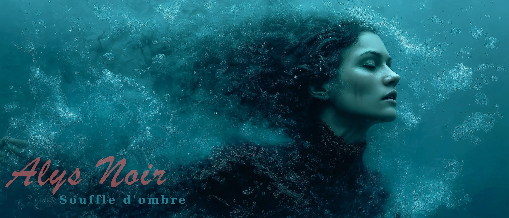
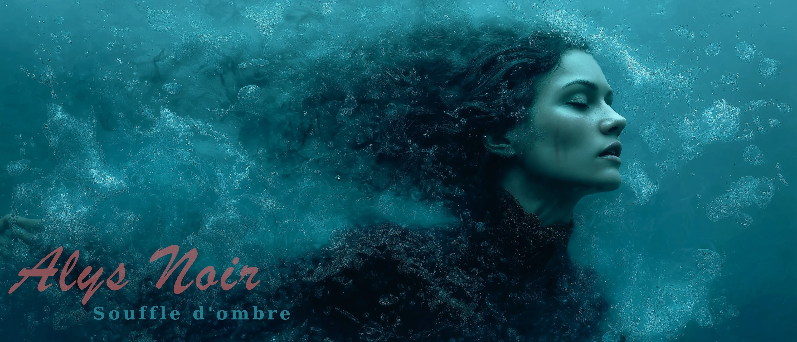

Biographie
Née en Belgique au début des années 2000, Alys Noir est une artiste à la croisée du pop rock, de l’émotion brute et de la poésie sombre. Son univers, à la fois délicat et intense, puise sa force dans la sincérité et la pudeur.
Issue d’une famille d’artistes, Alys grandit entourée de créativité : une mère styliste, un père passionné d’arts plastiques, de dessin et de musique assistée par ordinateur. Cet environnement artistique façonne très tôt sa sensibilité et son goût pour la beauté imparfaite des émotions humaines.
Inspirée par Mylène Farmer et Evanescence, Alys développe un style singulier où se mêlent fragilité, force et mystère. Réservée et discrète, elle trouve refuge dans l’écriture, transformant les mots en exutoire, en miroir, en refuge. Ses chansons explorent les zones d’ombre et de lumière : la quête de soi, les blessures intérieures, le rêve, l’absence et la résilience.
Le 18 octobre 2024, elle dévoile son premier album, Les Ailes Brisées, qui pose les fondations d’un univers authentique et introspectif. Suivent le single Vierge ou Vipère (21 juin 2026) et l’album La Main de l’Espèce (26 septembre 2025), confirmant la profondeur et la cohérence de sa démarche artistique.
Chez Alys Noir, l’argent n’a jamais été un moteur : sa musique est avant tout un acte de partage. À ce jour, aucun gain n’a encore été généré, et chaque projet est financé personnellement pour améliorer la production, offrir du contenu aux fans et faire vivre la musique. Si des bénéfices venaient un jour à être réalisés, ils seraient en grande partie redistribués, CD physiques offerts, concerts gratuits, ou aide apportée à des personnes dans le besoin. Son art a pour but de donner, jamais de prendre : une musique qui tend la main, loin des artifices, fidèle à son âme.


 



Albums
Premier Album : Les Ailes Brisées

Sorti le 18 octobre 2024, "Les Ailes Brisées" est un voyage émotionnel à travers 10 titres qui explorent les thèmes de la renaissance, de la transformation et de la résilience.